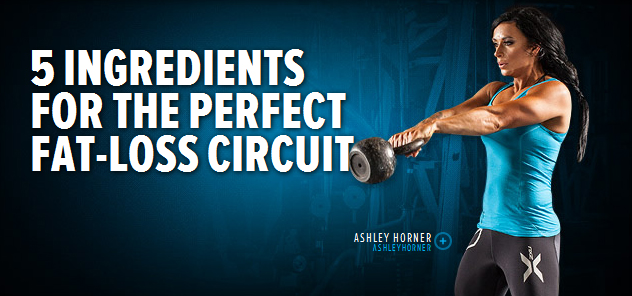
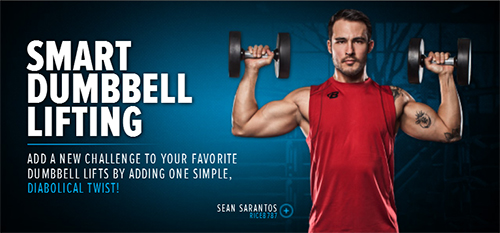
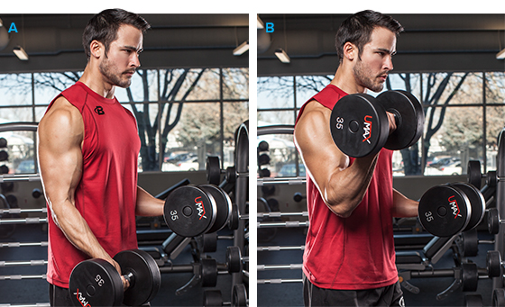
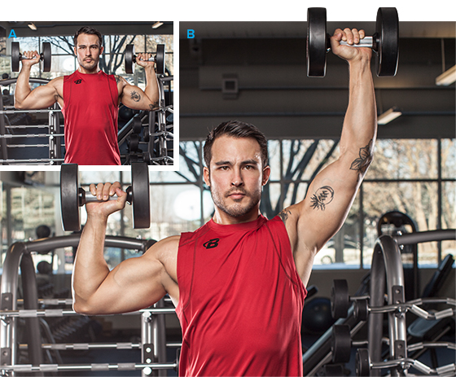
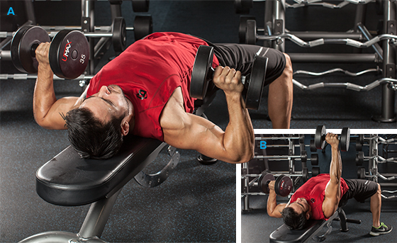
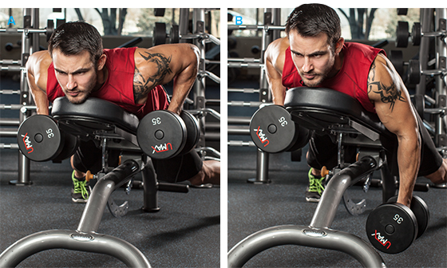
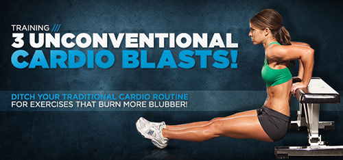
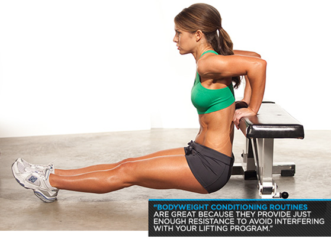
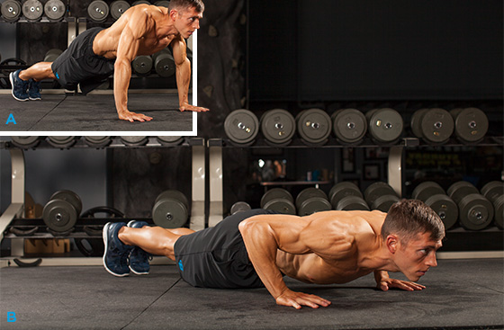
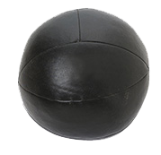

Maybe you've had sand kicked in your face. Maybe you've lost one too many attainable women to beefier guys. Or maybe you've read so much about weight loss that actually admitting you want to gain weight is a societal taboo. Whatever the reason, you want to bulk up. Now.
But forget about your alleged high-revving metabolism, says Doug Kalman, R.D., director of nutrition at Miami Research Associates. "Most lean men who can't gain muscle weight are simply eating and exercising the wrong way," he says.
10 principles to pack on as much as a pound of muscle each week.
1. Maximize muscle building
The more protein your body stores—in a process called protein synthesis—the larger your muscles grow.
Read more
But your body is constantly draining its protein reserves for other uses—making hormones, for instance. The result is less protein available for muscle building. To counteract that, you need to "build and store new proteins faster than your body breaks down old proteins," says Michael Houston, Ph.D., a professor of nutrition at Virginia Tech University.
2. Eat meat
Shoot for about 1 gram of protein per pound of body weight, which is roughly the maximum amount your body can use in a day, according to a landmark study in the Journal of Applied Physiology.
Read more
(For example, a 160-pound man should consume 160 grams of protein a day—the amount he'd get from an 8-ounce chicken breast, 1 cup of cottage cheese, a roast-beef sandwich, two eggs, a glass of milk, and 2 ounces of peanuts.) Split the rest of your daily calories equally between carbohydrates and fats.
3. Eat more.
In addition to adequate protein, you need more calories. Use the following formula to calculate the number you need to take in daily to gain 1 pound a week. (Give yourself 2 weeks for results to show up on the bathroom scale. If you haven't gained by then, increase your calories by 500 a day.)
Your Table Control
Insert your date to get result of your BMI and controls your weight
Read more
BMI -Body Measure Index
4. Work your biggest muscles.
If you're a beginner, just about any workout will be intense enough to increase protein synthesis.
Read more
But if you've been lifting for a while, you'll build the most muscle quickest if you focus on the large muscle groups, like the chest, back, and legs. Add squats, deadlifts, pullups, bent-over rows, bench presses, dips, and military presses to your workout. Do two or three sets of eight to 12 repetitions, with about 60 seconds' rest between sets.
5. But first, have a stiff drink.
A 2001 study at the University of Texas found that lifters who drank a shake containing amino acids and carbohydrates before working out increased their protein synthesis more than lifters who drank the same shake after exercising.
Read more
The shake contained 6 grams of essential amino acids—the muscle-building blocks of protein—and 35 grams of carbohydrates. "Since exercise increases bloodflow to your working tissues, drinking a carbohydrate-protein mixture before your workout may lead to greater uptake of the amino acids in your muscles," says Kevin Tipton, Ph.D., an exercise and nutrition researcher at the University of Texas in Galveston.
For your shake, you'll need about 10 to 20 grams of protein—usually about one scoop of a whey-protein powder. Can't stomach protein drinks? You can get the same nutrients from a sandwich made with 4 ounces of deli turkey and a slice of American cheese on whole wheat bread. But a drink is better. "Liquid meals are absorbed faster," says Kalman. So tough it out. Drink one 30 to 60 minutes before your workout.
6. Lift Every Other Day
Do a full-body workout followed by a day of rest. Studies show that a challenging ...
Read more
weight workout increases protein synthesis for up to 48 hours immediately after your exercise session. "Your muscles grow when you're resting, not when you're working out," says Michael Mejia, C.S.C.S., Men's Health exercise advisor and a former skinny guy who packed on 40 pounds of muscle using this very program.
7. Down Carbs After Your Workout
Research shows that you'll rebuild muscle faster on your rest days if you feed your body carbohydrates.
Read more
"Post-workout meals with carbs increase your insulin levels," which, in turn, slows the rate of protein breakdown, says Kalman. Have a banana, a sports drink, a peanut-butter sandwich.
8. Eat Every 3 Hours
"If you don't eat often enough, you can limit the rate at which your body builds new proteins," says Houston.
Read more
Take the number of calories you need in a day and divide by six. That's roughly the number you should eat at each meal. Make sure you consume some protein—around 20 grams—every 3 hours.
9. Make One Snack Ice Cream
Have a bowl of ice cream (any kind) 2 hours after your workout.
Read more
According to a study in the American Journal of Clinical Nutrition, this snack triggers a surge of insulin better than most foods do. And that'll put a damper on post-workout protein breakdown.
10. Have Some Milk Before Bed
Eat a combination of carbohydrates and protein 30 minutes before you go to bed.
Read more
The calories are more likely to stick with you during sleep and reduce protein breakdown in your muscles, says Kalman. Try a cup of raisin bran with a cup of skim milk or a cup of cottage cheese and a small bowl of fruit. Eat again as soon as you wake up. "The more diligent you are, the better results you'll get," says Kalman.
Not feeling rows, push-ups, or curls where you should? Feeling burpees or sprints where you shouldn't? Here's your cheat sheet for taking classic movements to the next level!
I'm the sort of trainer who believes that proper technique is crucial—and that no technique is sacred. Sound contradictory? It isn't to me. Sure, we may have a perfectly adequate way of performing a movement, but that doesn't mean there isn't a better way to make it work for you, your body, and your goals.
I've found that some people are resistant to refining classic exercises; they assume these exercises are just fine the way they are, since old-school athletes and bodybuilders have been using them forever. But here's the thing: Those old-school athletes and bodybuilders were innovators, too. They built upon knowledge they gained from those who came before them, and then they forged their own path. This is the basis of all progress, in all parts of life.
In my article, "7 Gym Hacks You Need to Know," I showed you some novel ways to solve common equipment problems in the weight room. This time around, I'm focusing on refinements we've developed for specific exercises. We use these modifications in the Performance U approach to increase the safety, productivity, and efficiency of classic exercises.
Occupation:Trainer, owner of Performance University, author of Strength Training for Fat Loss.
Location: Ft. Lauderdale, FL
1. Burpees
Most trainers and fitness enthusiasts—of all varieties, not just CrossFit athletes—perform the burpee exercise with less-than-optimal form. What do I mean by this? By going down with their feet together and back bent over, they make the movement both less safe and less metabolically demanding than it could be.
So what's the solution? Perform your squat thrusts—as burpees are alternately known—less like a squat and more like a sumo deadlift. This moves the stress from the back to the hips, which also enables you to work harder. Lucky you!
Burpee Exercise How to do Perfect Burpees
Watch The Video - 1:31
Of course, you can add a push-up at the bottom of each burpee, if you'd like. You can also add a jump at the top of each burpee if you're looking to make this exercise more dynamic, and want to further increase the metabolic demands.
Push-Ups
You already know that letting your head or hips sag toward the floor displays poor control during push-ups. But that's not all you need to know! Here are three ways to make your push-ups safer on the joints and more powerful, allowing you to crank out more reps and boost the intensity of your workout.
Push-Up Exercise How to do a Perfect Push Up
Watch The Video - 5:05
Arm Angle
In order to maximize your ability to create force and get better leverage on each rep, keep your elbows closer to your sides at roughly a 20- to 40-degree angle from your body instead of flaring them out at a 90-degree angle as most people do. This easy tweak shortens the lever arm, which gives you an immediate mechanical advantage. You'll be able to better incorporate your lats and upper-back muscles—after all, this is a total upper-body movement—but it will also make it a better chest movement as you crank out rep after solid rep.
Elbow Positioning
The push-up is a compound exercise that strengthens the chest, shoulders, and triceps. However, many people allow their elbows to wander past their wrists—either behind or out to the side—which reduces the chest and shoulder involvement and makes it more of a triceps-dominant movement. Unless you're trying to isolate your triceps, keep your elbows above your wrists through the entire push-up action. Your elbows should form a 90-degree angle at the bottom position of the movement.
Hand Positioning
This is a very common problem. If your hands are pointed slightly inward, toward your body's midline, it encourages you to make both of the mistakes I've already covered. Your arms will flare out away from your sides, and your elbows will wander beyond your wrists. Instead, when performing push-ups, turn your hands outward slightly, pointing your fingers out away from your body's middle at roughly a 45-degree angle.
3. One-Arm Push-Ups
I consider the one-arm push-up (let's call it the OAP for short) to be the king of upper-body pushing exercises. As I say in the video below, unless you're training the bench press for a specific competition like a football combine or powerlifting competition, the payoff for mastering the one-arm push-up is usually higher.
Whether you agree with me or not, you can't argue that the OAP is a great exercise for improving upper-body pushing strength and core stiffness—if you do it right. And when I peruse online OAP videos, I see plenty of examples you shouldn't be following.
One-Arm Push-Up How to do it the RIGHT Way
Watch The Video - 5:19
As I note in the video, some of the same cues that make a great push-up make a great single-armer. For instance, keep your wrist below your elbow and turn your hand out, rather than in. Likewise, you need to keep your elbow in—even more so than in the two-arm version.
Some people gauge the quality of their OAP by how level they keep their shoulders. Meanwhile, their spine bends and extends so much, they look like they're doing the cobra pose in yoga. Let's be clear: I think it's OK if your pressing shoulder rotates toward your hand on the descent, as long as your shoulders and hips rotate together. Rotating your shoulder slightly can help you corkscrew your working arm into the push-up, which is what makes for truly strong OAPs.
On the way up, try to push the floor down away from you, and don't lean upward. Get square at the top, and lower yourself back down for another go!
4. Bent-Over Rows And Inverted Rows
Wide-grip bent-over rows are a go-to move in the Performance U training approach when it comes to the mid-back musculature. However, while many people know the great cue of pulling the bar to—or "through"—the chest, few can do it without having to rotate their shoulders inward in the last couple of inches. This changes the training effect of the movement and takes the focus off of where it should be.
The answer to this common problem is simple: Just wander over to the squat rack and pick up that fat-bar pad someone left lying on the floor. Put it on the bar, and pull the pad—not the bar—up to your chest.
Barbell Bent Over Rows Wide Grip
Watch The Video - 2:24
The same hack works wonders on the wide-grip inverted row, another movement where the last couple of inches become a sloppy struggle for far too many people. Use the pad as I direct in these videos, and you'll find yourself rubbing—or at least trying to rub— your middle back the next day, rather than your front delts or biceps.
Inverted Row Exercise Best Form Tips
Watch The Video - 1:49
5. Dumbbell Biceps Curls
Your biceps don't just flex your elbow, they also supinate your forearm, meaning they help you rotate it outward so your palm faces upward. It stands to reason that's it's a smart idea to perform biceps curls in a manner that involves both elbow flexion and forearm supination.
Here's how: Instead of gripping the dumbbell in the middle, as you might think makes the most sense, grip it with your hand as far to the thumb side as possible. Then, as you curl, keep rotating the dumbbell until you can touch the non-thumb side to the front of your shoulder at the top of the movement.
Biceps Curls A Better Way to do Dumbbell Biceps Exercise
Watch The Video - 1:28
This small change in hand position can make a huge difference, because this grip forces you to resist forearm pronation. All of a sudden, a weight that was easy for 10 reps might seem a whole lot harder.
Determining Chin-Up Grip Width
There are some exercises I have almost all athletes I work with perform, such as chin-ups, squats, deadlifts, and push-ups. But I definitely don't expect everyone to do them the same way. Why would you try to make your body fit into an exercise, when you could easily customize the movement to your anatomy?
In this video below, which is a clip taken from my "Secrets of Back Training" DVD, IFBB pro bodybuilder Alex Cambronero and I show you the Performance U approach for determining the chin-up grip width. It's as simple as doing an unweighted biceps curl, and in my experience, it's quite effective at helping athletes optimize their pulling strength.
Chin Ups Best Chin Up Grip Width
Watch The Video - 2:24
Now, your arms certainly won't explode if you decide to use a wider or narrower chin-up grip, or if you don't even think about grip width and just "grip and go." Consider this a simple way to help personalize the chin-up movement, feel a little stronger performing it, and maybe squeeze out a rep or two more than you would otherwise.
Sprinting Minimizing Hamstring Injuries
It no secret to any coach or trainer that athletes are most likely to injure a hamstring in the moments after they explode off the line. If you've watched much Olympic sprinting, football, or even baseball, you've no doubt seen someone "come up lame" after a quick start.
If you're one of those athletes, the risk is part of the game. It doesn't have to be that way for the rest of us, though. If you're someone who uses sprint training outside a competitive setting, you can minimize your risk of suffering a hamstring injury simply by skipping the quick start.
Here's how it works: Instead of starting from a still position and exploding off the line, simply jog to the line and begin sprinting once you cross it. Beginning with a preliminary jog means your body will simply be asked to go from a lower gear to a higher gear, rather than going from nothing straight to maximal contraction.
If you're an athlete training for an event that requires you to begin sprinting from a still position—such as a football combine— you'll need to train specifically for that event by using still starts. That said, there's no reason why you can't also integrate some jog-up starts. They'll help you build your speed while minimizing the risk of injury along the way.

5 Ingredients For The Perfect Fat-Loss Circuit
Too often, metabolic circuits are little more than a mess of randomly paired movements. Here's the formula for a precise fat-loss workout that will test your limits while providing results!
Occupation:Trainer, owner of Performance University, author of Strength Training for Fat Loss.
Location: Ft. Lauderdale, FL
A Fat-Loss Five sequence consists of five exercises performed back to back in a circuit. This circuit is developed to be a simple—but not easy—training formula to follow. It's designed to be a fully comprehensive training formula that covers all of the bases. There are two basic components to the Fat-Loss Five circuit: four strength exercises and one total-body cardio exercise.
While you cycle through strength exercises, the sequencing of the Fat-Loss Five circuit creates a constant cardiorespiratory effect. Whenever you perform any strength exercise, your body pumps more blood to the muscles involved in the movement. By performing an upper-body exercise, followed by a lower-body exercise, followed by a core exercise, you constantly change where your body must increase blood flow.
Additionally, finishing each circuit of strength exercises with a burst of total-body cardio interval exercise keeps this cardio-respiratory effect going even longer.
Here are the five categories that make up a Fat-Loss Five circuit:
Upper-body pushing exercise
Upper-body pulling exercise
Lower-body leg- or hip-oriented exercise
Core exercise
Cardio exercise
The beauty of the Fat-Loss Five circuit is its simplicity and versatility. As I explain in my new book "Strength Training for Fat Loss," you can plug in virtually any exercise you want as long as it fits in the five categories.
Ingredient 1: Upper-Body Pushing Exercise
The purpose of these exercises is to incorporate the muscles of the chest, shoulders, triceps, and torso in order to maintain a stable body position.
Read more
Here's a list of the top five exercises I suggest for this category:
Lunge and band chest press
Break-dancer push-up
Push-back push-up
Box crossover push-up
Uppercut (with dumbbells)
Forward Lunge + Chest Press Exercise With Resistance Bands
Watch The Video - 01:16
Ingredient 2: Upper-Body Pulling Exercise
The purpose of these exercises is to incorporate the muscles of the back, shoulders, biceps, and torso in order to maintain a stable body position.
Read more
Here's a list of the top five exercises I suggest for this category:
Wide-grip band row
Band swimmers
Alternate-arm band row
Suspension row (low elbow or wide elbow)
Suspension Y-pull
Suspension Y Lift
Watch The Video - 00:11
Ingredient 3: Lower Body Exercise
You can choose either a leg-oriented or hip-oriented lower-body exercise to fill this category. The purpose of these exercises is to incorporate the muscles of the legs, glutes, and torso in order to maintain a stable body position.
Read more
Here's a list of the top five exercises I suggest for this category:
Front or back squat (with barbell)
Swing (with kettlebell or dumbbell)
Lateral lunge
Frog jump
Alternate-leg step-up (with dumbbell)
Push Up with Frog Jump
Watch The Video - 00:10
Ingredient 4: Core Exercise
The purpose of these exercises is to focus on the abdominal and oblique musculature while also incorporating the hips and shoulders, which, as mentioned earlier, has been shown to be a more effective way of training the abdominal muscles compared with trying to isolate them.
Read more
Here's a list of the top five exercises I suggest for this category:
Ab snail
Arm walk-out
Stability-ball knee tuck
Angled barbell rainbow
One-arm plank
Angled Barbell Rainbow
Watch The Video - 02:17
Ingredient 5: Cardio Exercise
Although I don't recommend using these exercises as long-duration, steady-state cardio in the workout programs provided in my book, they are added in short duration within Fat-Loss Five circuits to boost their effectiveness.
Read more
They are kept to short 1-2-minute intervals, which drastically reduces the impact on your joints that they create when performed for extended lengths of time.
Rope Jumping
The cardio options for the Fat-Loss Five include shadowboxing or kickboxing, rope jumping, running, stationary bike (an Airdyne bike is preferred), rower, reaction ball, elliptical trainer, and VersaClimber.
Fat-Loss Five and Bilateral Exercises
Although unilateral exercises can certainly be implemented within a Fat-Loss Five, these circuits run smoother when they use purely bilateral exercises or alternating-limb exercises such as lunges or step-ups (where you switch legs on each rep).
Also, compound movements like squats, push-ups, chin-ups, and barbell rows are better in Fat-Loss Five circuits instead of smaller, single-joint exercises (e.g., biceps curls, triceps extensions).
Compound movements create a better metabolic training response than single-joint actions because they involve more muscles, and the goal of the Fat-Loss Five protocol is to maximize the metabolic effect of every rep, every circuit sequence, and every workout

Smart Dumbbell Lifting: Iso-Dynamic Training
Isometric training can be difficult and tedious, but you can reap its benefits with this overload technique. Pick up two dumbbells and start moving one of them!
The fundamental bodybuilding exercises are considered fundamental because they work. That said, if you're lifting as a lifestyle, not just as a whim, it's important you learn how to vary the basic moves in not-so-basic ways. This will prevent your workouts from growing stale and less effective, and it can help you lift bigger and better when you return to the classic versions.
In this article, I'm showing you how to use what I call "iso-dynamic training" to create a new training stimulus from the staples of your program. Put simply, iso-dynamic training is where, within a set of a given dumbbell exercise, you hold one side in an isometric contraction while the other arm moves through a dynamic (concentric and eccentric) movement. Then, in the same set, you switch so that the side that was doing the isometric moves dynamically.
Sound simple enough? Check out the video to see what I mean.
Why To Hold It
Iso-dynamic movements are overload techniques, like dropsets, assisted reps, or one of my personal favorites, cheat-centrics.
These techniques are all ways to subject a muscle group to increased time under tension (TUT), either as a finisher or as a change of pace.
Read more
Increasing TUT increases metabolic stress, which is one of the three mechanisms for increasing muscle hypertrophy as described in Brad Schoenfeld's seminal 2010 research paper.1 A 2002 study published in the "European Journal of Applied Physiology" further solidified the link between isometric training and metabolic stress—not that anyone who has ever held a heavy dumbbell out to their side for more than a few seconds needed a study to tell them that!2
In fact, a number of studies over the years have confirmed that isometric training can be an effective means of adding muscle. Its downside is, and has always been, that it's boring to remain like a statue for 5 seconds, let alone 30 seconds or more. Iso-dynamic training allows you to reap the hypertrophy benefits of isometric training, but without the risk of falling asleep and dropping a dumbbell on your foot.
As an additional upside, the iso-dynamic techniques described here you will give you an incredible pump, which researchers Bret Contreras and Schoenfeld concluded "causes both an increase in protein synthesis and a decrease in protein breakdown."3,4,5 But aside from the physiological effect, a well-timed pump can also mean the difference between a top placing and a major letdown at a physique competition. That's why you'll see the athletes I work with doing iso-dynamic lifts backstage!
Here are my six favorite movements to use with iso-dynamic training, along with the shrugs mentioned in the video:
Iso-Dynamic Biceps Curls
Every bodybuilder loves doing curls, but this version will give you a new appreciation for how tough they can be, while helping walk out of the gym with your biceps inflated like Donald Trump's ego...
Read more
To perform it, hold your isometric arm's elbow at a 90-degree angle, straight out from the body.
On this and all of the other iso-dynamic exercises here, make sure your arm on the isometric side is totally still while the other side moves. Don't let it drop from starting position, no matter how tempting it may be!

Iso-Dynamic Biceps Curl
Iso-Dynamic Shoulder Raises
This is one of my favorite exercises for figure, physique, and bodybuilding competitors to do before going onstage to compete.
Read more
It pumps up their shoulders and helps them to look like a "delt-a-saurus." (Full disclosure: I stole "delt-a-saurus" from my beautiful girlfriend and figure competitor Jaclyn Gough.)
To perform it, simply lift two dumbbells up to parallel, but only let one drop. After you perform several reps on the dynamic side, switch so your right arm performs the dynamic reps and your left arm holds isometrically.
Iso-Dynamic Rear-Delt Flyes
Read more
From a bent-over position, raise both your arms out to the side so they are parallel to the floor, as in a standard rear delt flye. Continue holding your right arm where it is while your left arm performs the dynamic reps.
Iso-Dynamic Shoulder Press
...
Read more
Seated or standing, hold your right arm isometrically in the middle of the range of motion, making a 90-degree angle at the elbow, while your left arm performs a standard, full-range-of-motion overhead press. Once you perform several dynamic reps on your left side, swap arms.

Iso-Dynamic Shoulder Press
Iso-Dynamic Dumbbell Press
...
Read more
Perform the dumbbell press along the same lines as the dumbbell shoulder press. Keep an arm performing the isometric hold at a 90-degree angle, with your humerus (upper-arm bone) parallel to the floor. Don't allow it to droop.

Iso-Dynamic Dumbbell Press
Iso-Dynamic Bent-Over Rows
...
Read more
This is the opposite of the iso-dynamic dumbbell press. Grab a dumbbell in each hand and assume a bent-over rowing position with your torso parallel to the ground. Then perform a bent-over row with both arms. Hold your right arm at the top of the row while you perform normal rows with your left arm. Then switch.

Iso-Dynamic Dumbbell Rows
The Iso-Dynamic Ladder
Read more
Because iso-dynamic reps get progressively more difficult, they're perfect for a descending rep scheme such as a 5-4-3-2 ladder. Perform 5 dynamic reps on your right side while your left side does the isometric hold. Then switch and perform 5 dynamic reps on your left side while your right side performs a hold. Repeat the process doing 4 dynamic reps on each side, and then 3 reps.
To finish, perform two reps in a bilateral fashion, i.e., using both arms simultaneously. If you're struggling for mental clarity at the end of the ladder, remember it this way: two arms for two reps.
I like this scheme because it's easy to remember and accommodates for accumulated fatigue. As the set progresses and fatigue builds, you perform fewer and fewer reps. The last two bilateral reps also allow you to incorporate a little extra body-English if needed. But be aware that when I say "body English" I'm referring to controlled cheating like I covered in my cheat-centrics article, not the type of cheating that puts your back at risk.

Burn Fat Like Crazy With 3 Unconventional Cardio Styles!
Traditional cardio can be boring, unproductive cardio. Stop walking the treadmill like a zombie and try these alternative workouts that scorch fat and build strength!
If you're tired of slugging it out on cardio machines with minimal results, it's time to re-evaluate your fat-loss formula. Forget what you think you know about steady-state cardio and fat-loss training programs. Implement alternative exercises that produce powerful results.
The new wave of cardio exercise is upon us. There's no reason to get bogged down on traditional gym equipment. Instead, try out bodyweight routines, plyometrics, and CrossFit-inspired rounds for time. These alternatives cut through calories like a broadsword through butter, challenge your balance, improve your agility, and develop functional strength.
1 Bodyweight Movements
Read more
Bodyweight conditioning routines are great because they provide just enough resistance to avoid interfering with your lifting program. You can easily incorporate bodyweight workouts on off days from your lifting regimen.
When blasting through bodyweight exercises, you want to complete a circuit of movements with a high rep count for each exercise before moving to the next exercise. Aim for 20-30 reps of each exercise, and rest for 90-120 seconds after each circuit. Repeat each circuit 3-5 times. Maintain good form throughout the exercises to prevent injury.

2 Rounds For Time
Read more
"Rounds for time" protocols are popular among the CrossFit crowd. They increase your work capacity and boost your muscular endurance. Timing each workout also makes it easy to monitor your progress and ensure improvement.
Select 2-3 exercises on your account page that you can perform back-to-back, and complete the designated reps for each exercise. That counts as one round. Repeat the process for your total allotted number of rounds, with as little rest as possible, and check your time. Your mission is to hit the entire workout as fast as possible and to beat your personal best.

3 Plyometrics
Read more

Plyometrics training increases force generation and fast-twitch muscle fiber activation, just like a session of all-out sprints. Due to a phenomenon called excess post-exercise oxygen consumption (EPOC), plyos also produce a strong calorie burn for hours after a workout. They're also great for athletes because of their exceptional carryover to most repeated-sprint sports.
Perform 10-20 reps of one exercise, take a short rest, and move directly into the next exercise. When you complete the entire series, take 1-2 minutes off before the second and third time through. Make sure to warm up properly to lower the risk of muscle pulls and sprains.